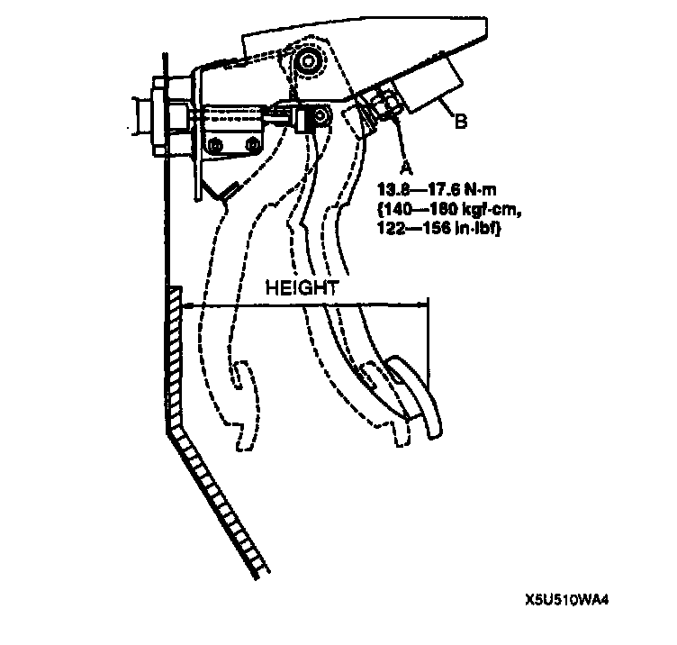
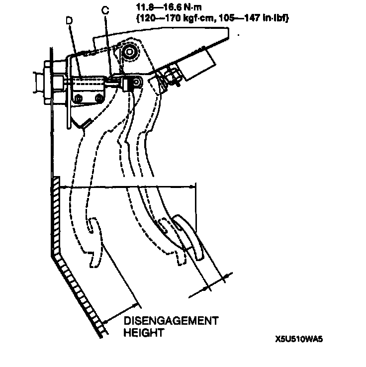

Clutch Pedal Assembly: Adjustments
CLUTCH PEDAL ADJUSTMENTClutch Pedal Height Adjustment
1. Disconnect the clutch switch connector.

2. Loosen locknut A and turn clutch switch B until the height is correct.
3. Tighten locknut A.
Tightening torque 13.8 - 17.6 Nm (140 - 180 kgf-cm, 122 -156 inch lbs.)
4. After adjustment, inspect the free play.
Clutch Pedal Free Play Adjustment

1. Loosen locknut C and turn push rod D until the free play is correct.
2. Verify that the disengagement height as measured from the upper surface of the pedal pad to the carpet is correct when the pedal is fully depressed.
Minimum disengagement height 68 mm (2.68 inch) (With carpet)
3. Tighten locknut C.
Tightening torque 11.8 - 16.6 Nm (120 - 170 kgf-cm, 105 - 147 inch lbs.)
4. After adjustment, inspect the height.